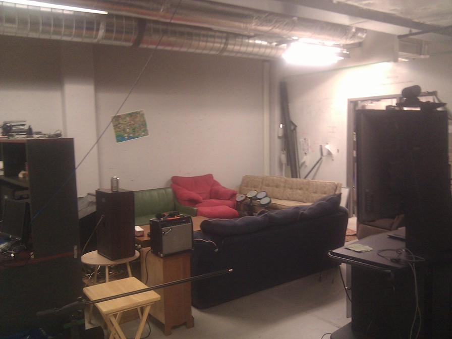
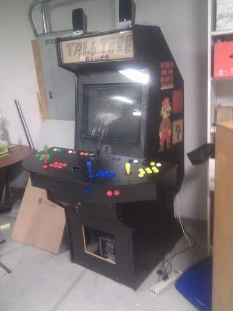
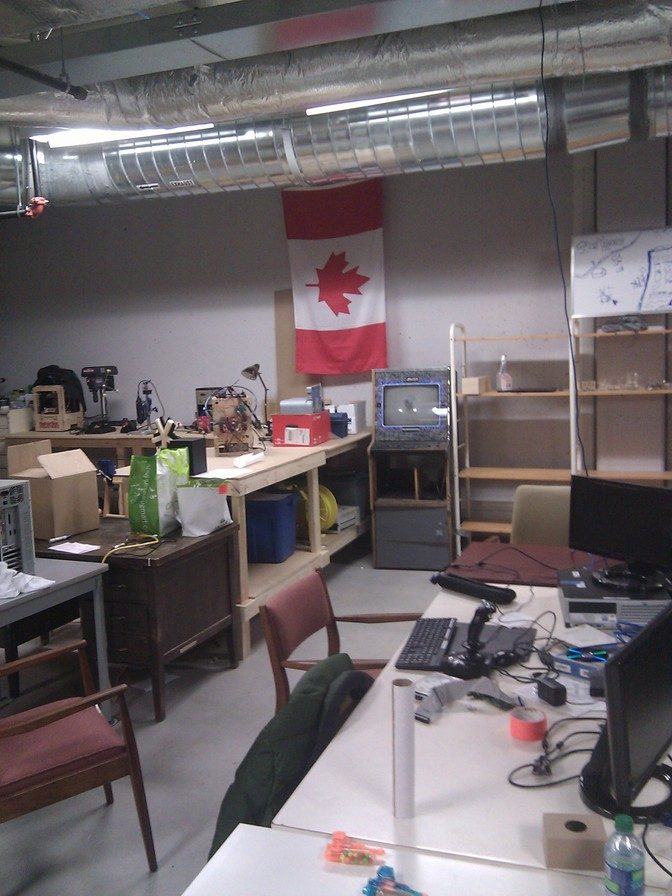
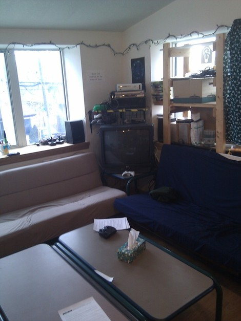
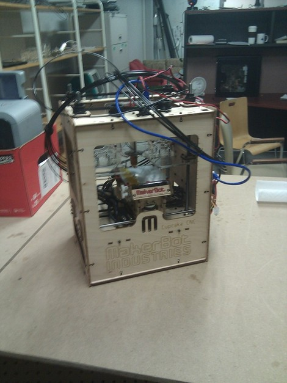

Library Technology Conference 2012
Conference notes and other ephemera for my LTC2012 presentation, "Bringing Makers into the Library: Digital Humanities, Hackerspaces, and the new DIY."
| z, ? | toggle help (this) |
| space, → | next slide |
| shift-space, ← | previous slide |
| d | toggle debug mode |
| ## <ret> | go to slide # |
| c, t | table of contents (vi) |
| f | toggle footer |
| r | reload slides |
| n | toggle notes |
| p | run preshow |
| P | toggle pause |
Conference notes and other ephemera for my LTC2012 presentation, "Bringing Makers into the Library: Digital Humanities, Hackerspaces, and the new DIY."
ask if anyone's heard of these. If so particularly what do they think. Do they have experience of this at their own institutions? Can you gauge the level of interest? Try to define DH. Go ahead, try. I dare you. "Anything that ain't compilers".
Talk history. CHMM in 1994. Lots and lots and lots of activity. Rapid upswing recently because more attention is being paid by humanists in general to digital projects.
Ask if anybody knows. Mention that tenure for humanities phds is getting way less prevalent than even it was when you were in school. Postdocs, etc. Librarians are basically the original altac.
Zotero/Anthologize. Emory's "Tracking Samothrace". Charles Darwin's letters at UBC. take screenshots?
buh.
I think about this a lot. Like gavialib sez, we must all become labour theorists. But I'm not very good at it yet.
Especially in academia -- we're the people who work together rather than apart -- like some tenure track guys. Consequently, we can be really attractive to tenure track people who may be trying to compete with their department over dollars, prestige, etc.
any group will have conservatives. Often cons are a good bulwark against ingrained organizational ADD. But too much sway and you never get any damn thing done ever. Hiring is hard too. Can we hire? Or should we train in-house? Or combo of both?
we're talking about a specific sort of private sector culture, not everybody in PS. usually this means startups/smaller companies but not always. Bad and good culture exists across all groups. Small "i" innovative. :)
37signals model, google on the 20%. Note that this can be hard to do especially with an excessively conservative work culture.
OK, happy guy. But a lot of startups and other biz encourage people to work way over 40 hours, to eat/sleep/live at office, and this ultimately will lead to bad decision making and other effects. Occasionally is fine. all the time is not.
I could not find a good CC/PD sack of money image so I had to make one.
breathe.
brief history. real brief. Don't be like you-know-who.
Ask audience distribution, e.g., public vs academic vs other? Ask them why they came to the talk.
entire dev history on github. complain about multi-track cons. offer to talk people's ears off afterwards
Nothing would thrill me more than having this turn from "sage on the stage" to an open conversation.
Different institutions that nevertheless have commonality. Both face a sea change in their operations -- rise of internet, wikipedia, decline in traditional metrics like ref. "dawning of the Great Age of Librarians" - particularly how after printing press completely messed up libraries in that era. The Internet is that printing press.
Ask how many publics. Fully confess that you are an enthused patron of publics but have zip zero nada experience working in them. Try at this point to unconf the hell out of things.
MAKE magazine. Transform publics into places to help people make things. Note 9000 publics in US.
 businesses whose entire IP is CC.
usually private, usually nonprofit. Think communal garage. Monthly fee, sometimes classes for outside. Note, sadly, often dude-heavy. Talk about thinkhaus a bit.

unlab with drumpad.

unlab mame cabinet.

unlab with canadian flag

thinkhaus w/ tv, xbox etc.

Makerbot. Ask if anyone has seen one. Try to describe it.